Console Translator: Dịch game
Chơi game nào cũng hiểu
Dịch phụ đề game sang tiếng Việt. ANDROID
Tham gia kênh Telegram
Thông báo bản mới và nơi hỏi đáp, báo lỗi.
Vào kênh Telegram t.me/pstranslator Dùng iPhone? Xem hướng dẫn bản iPhone → Xem danh sách game Dịch AI · Sao chép tên game →Làm lần lượt từng bước, bấm vào bước để mở. Bước 2 đến 8 chỉ làm một lần.
1Cài app
App đang thử nghiệm trên Google Play. Hai bước dưới phải dùng cùng một Gmail.
- Mở nhóm thử nghiệm bằng Gmail đang dùng trên Play Store, bấm Tham gia nhóm.
- Mở link tải app, bấm Trở thành người thử nghiệm, rồi bấm tải trên Google Play và cài như app bình thường.
2Mở app lần đầu: chọn ngôn ngữ
- Chọn Tiếng Việt làm ngôn ngữ của app.
- Chọn Ngôn ngữ trong game (thường là English) và Dịch sang Tiếng Việt, bấm Tiếp tục. Đổi lại được bất cứ lúc nào trong Cài đặt.
- Bạn vào màn chính. Thấy Sẵn sàng là được.
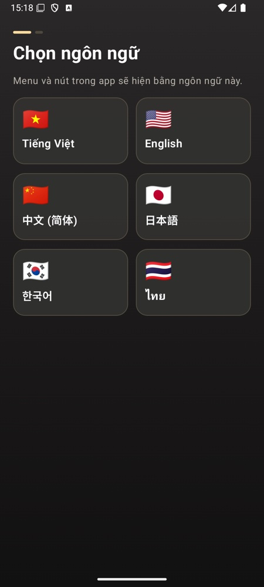
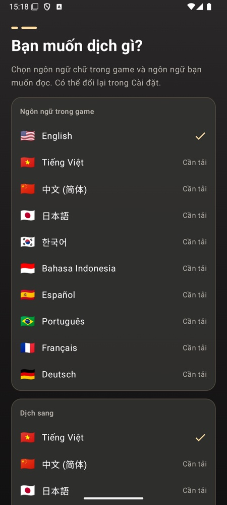
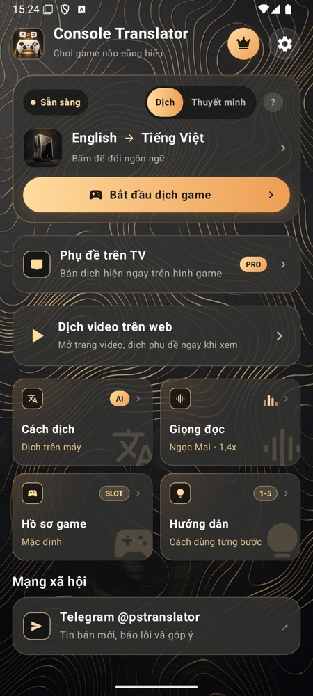
3Tạo tài khoản phụ trên PS5
App kết nối vào PS5 bằng một tài khoản PlayStation. Dùng chung tài khoản bạn đang cầm tay cầm chơi thì tay cầm bị ngắt, nên dùng một tài khoản phụ cho app. Tài khoản chính vẫn để chơi như bình thường.
- Ở màn hình chính PS5, bấm ảnh đại diện góc phải trên cùng → Chuyển người dùng (Switch User) → Thêm người dùng (Add User).
- Đăng nhập bằng một tài khoản PlayStation khác (tạo mới miễn phí nếu chưa có).
- Chuyển sang tài khoản phụ này để làm các bước dưới.
4Bật Chơi từ xa cho tài khoản phụ
- Bấm Bật Chơi từ xa (Enable Remote Play), bật công tắc cạnh tài khoản phụ. Bật sai người thì app không kết nối được.
- Quay lại, bật Ẩn trạng thái kết nối Chơi từ xa (Hide Remote Play Connection Status) để TV không hiện dòng "đã kết nối Chơi từ xa" khi chơi.

5Cho app tự bật PS5 khi máy đang nghỉ (nên làm)
- Giữ kết nối Internet Stay Connected to the Internet
- Cho phép bật PS5 qua mạng Enable Turning On PS5 from Network
Để PS5 ở chế độ nghỉ (đèn cam), mở app bấm kết nối là máy tự bật. Máy tắt hẳn thì phải bật bằng tay.
6Trên điện thoại: tìm máy
- Ở màn chính bấm Bắt đầu dịch game, chọn Chơi trên TV. Lần đầu app mở Ghép nối PX5.
- Bấm Tìm máy. Thấy dấu tích xanh Đã có máy ở địa chỉ... thì bấm Tiếp tục.
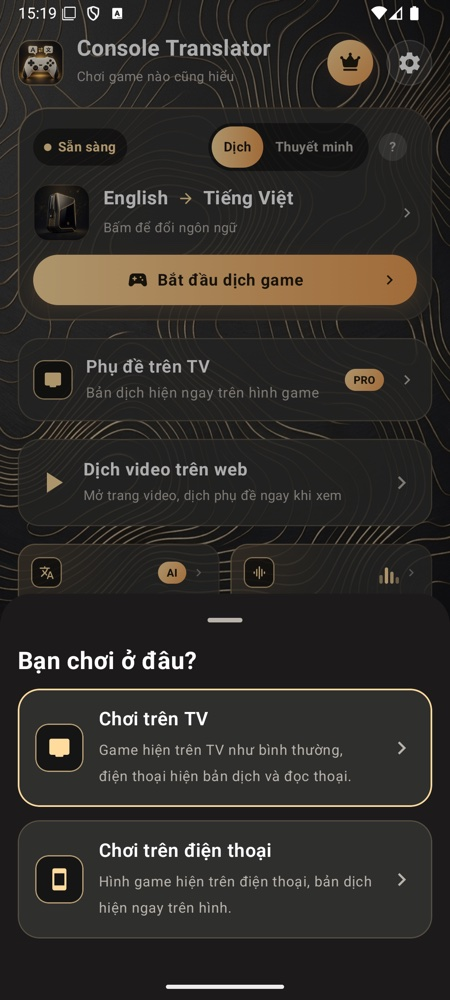
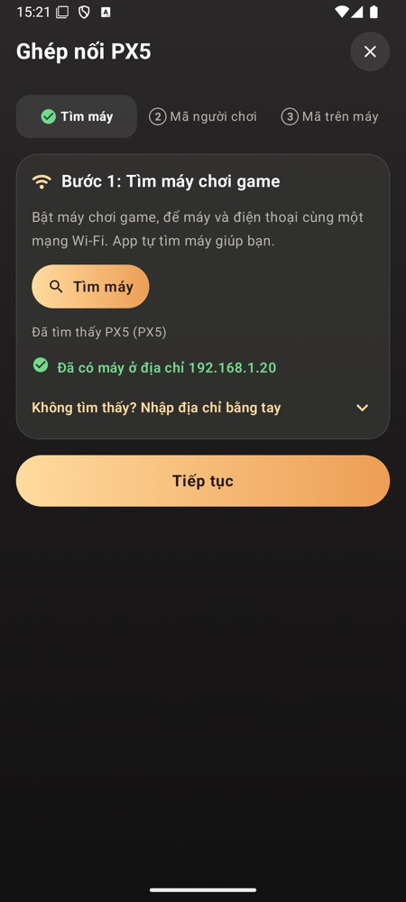
App không tìm thấy máy? Nhập địa chỉ bằng tay
- Trên PS5 vào Cài đặt (Settings) → Mạng (Network) → Trạng thái kết nối (Connection Status) → Xem trạng thái kết nối (View Connection Status).
- Tìm dòng IPv4 Address, dạng
192.168.x.x. - Trong app bấm Không tìm thấy? Nhập địa chỉ bằng tay, chọn PX5 hoặc PX4 rồi gõ đúng dãy số đó.
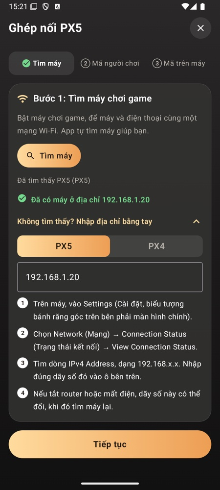
7Lấy mã người chơi của tài khoản phụ
- Trên PS5 (đang ở tài khoản phụ): bấm ảnh đại diện → Hồ sơ (Profile). Ghi lại Online ID nằm dưới tên hiển thị, đúng từng chữ.
- Trong app bấm Mở trang tra mã, hoặc mở psntools.com/psn/checker.
- Gõ Online ID, bấm Search.
- Ở dòng BASE64 (FOR REMOTE PLAY), chạm giữ dãy ký tự kết thúc bằng
=→ Sao chép. - Quay lại app, bấm Dán mã. Thấy Đã nhận mã thì bấm Tiếp tục.
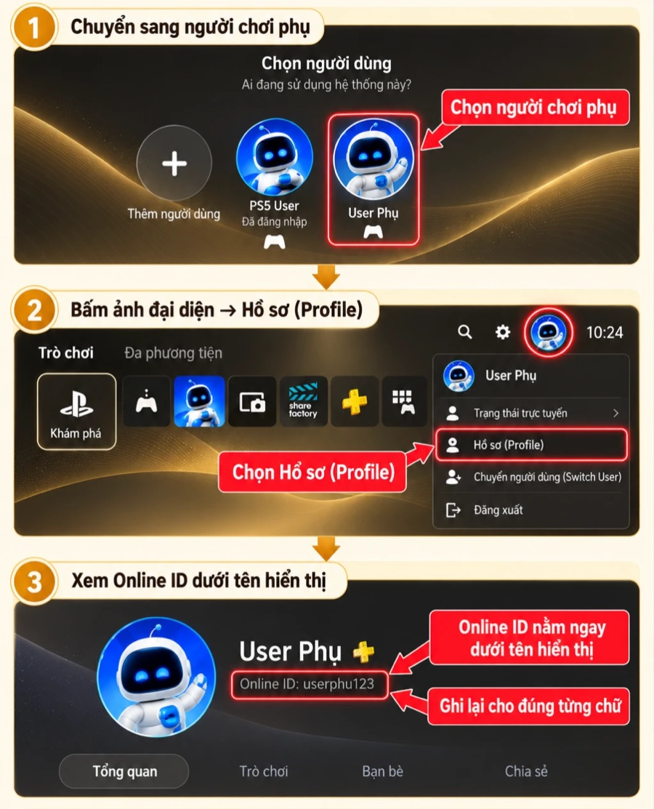

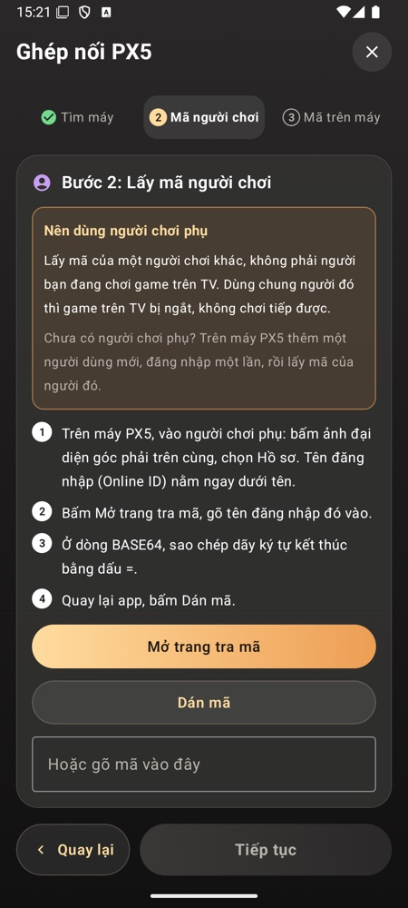
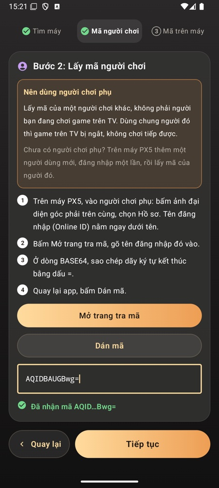
Không tìm thấy Online ID trên PS5?
- Trên PS5, cách khác: Cài đặt → Người dùng và tài khoản (Users and Accounts) → Tài khoản → Hồ sơ → Online ID.
- Trên điện thoại: mở PlayStation App, đăng nhập tài khoản phụ, bấm ảnh đại diện. Online ID nằm dưới ảnh.
Online ID là tên hiện khi chơi online, không phải email.
8Lấy mã 8 số trên PS5 và ghép nối
- Trên PS5 (vẫn ở tài khoản phụ): Cài đặt → Hệ thống → Chơi từ xa → Ghép nối thiết bị (Link Device).
- TV hiện 8 chữ số kèm thời gian còn lại.
- Nhập ngay 8 số vào app, bấm Ghép nối, chờ vài giây đến khi app báo thành công.

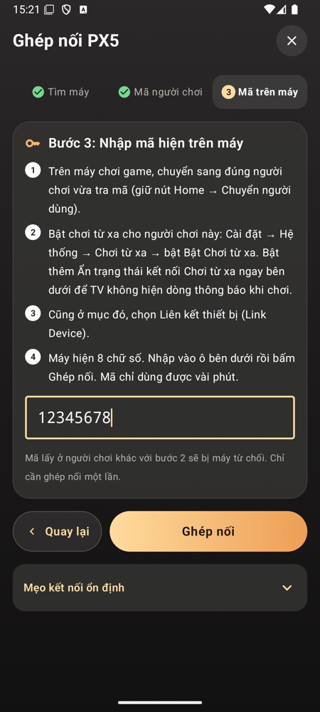
9Chơi và dịch
Ghép nối xong, từ lần sau chỉ cần làm bước này.
- Ở màn chính bấm Bắt đầu dịch game, chọn Chơi trên TV, rồi bấm Dịch khi chơi TV. Nếu PS5 đang nghỉ, app tự bật máy, đợi khoảng 30 giây.
- App báo tay cầm sẽ tắt một lát: bấm Đã hiểu, kết nối. Khi tay cầm tắt, bấm nút Home giữa tay cầm rồi chọn lại người chơi của bạn.
- Vào game, bật phụ đề tiếng Anh (English) trong phần cài đặt của game.
- Trong app, bấm nút khung màu vàng trên thanh công cụ, kéo khung vàng trùm lên chỗ phụ đề trên hình game, kéo chấm tròn ở góc để khung ôm vừa dòng chữ, bấm Lưu khung.
- Chơi bình thường bằng tay cầm. Nhân vật nói gì, app dịch và đọc to bằng tiếng Việt.
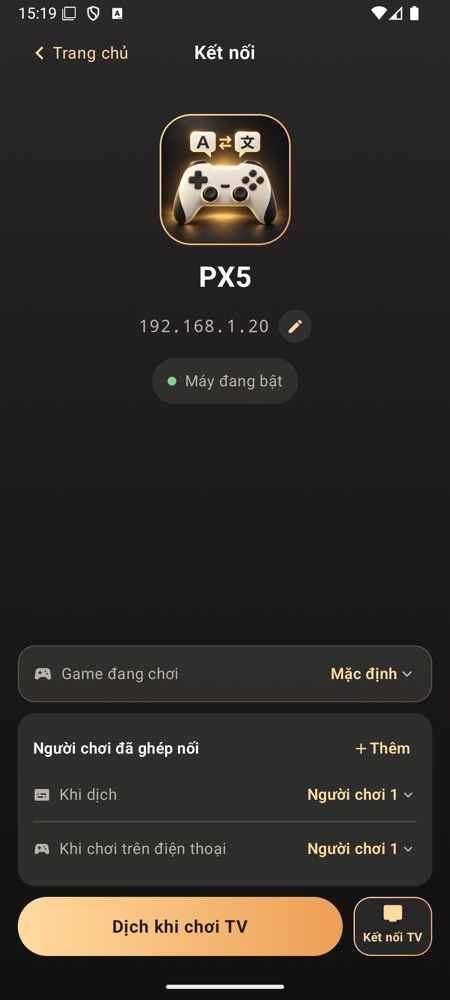
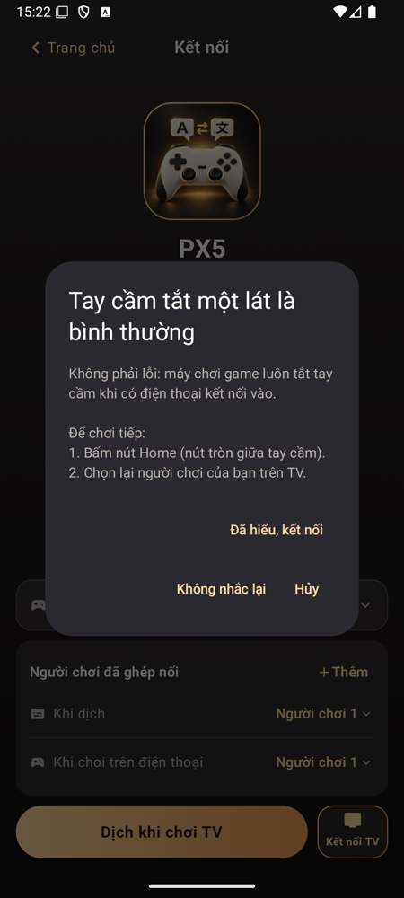
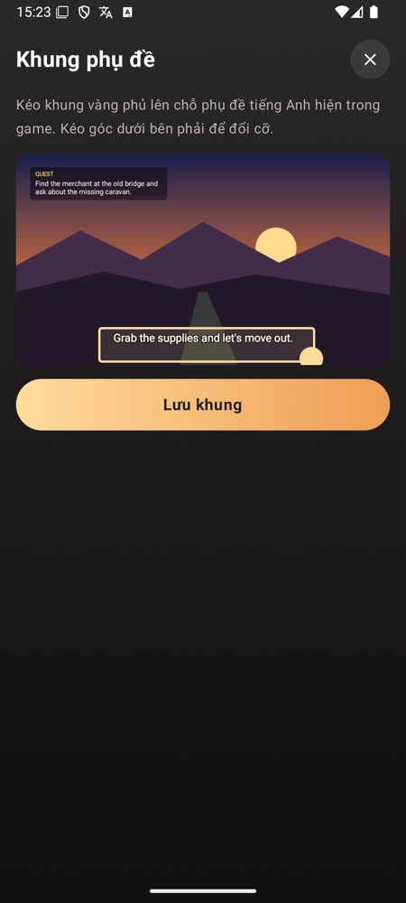
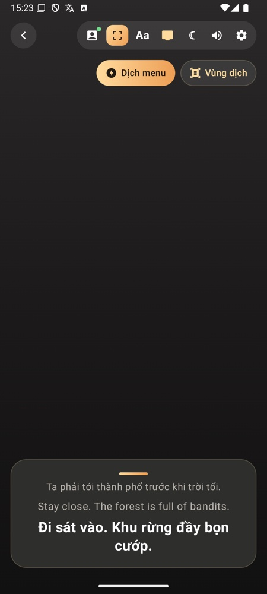
Khi nào dùng cách nào?
Câu nhân vật nói, phụ đề ở cuối màn hình, đổi liên tục. Chỉ cần kéo khung vàng đúng chỗ một lần.
Chữ đứng yên ở một chỗ khi đang chơi: nhiệm vụ ở góc, thư, bảng lựa chọn hội thoại, mô tả vật phẩm vừa nhặt. Kéo khung cam tới đúng chỗ đó.
Khi mở menu: kỹ năng, túi đồ, bản đồ, hướng dẫn. Cả màn hình nhiều chữ, app tự tìm đoạn mô tả dài để dịch, không cần kéo khung.
Mỗi chức năng một mục, bấm để xem.
1Màn chính
- Sẵn sàng: app đã sẵn sàng. Bấm Bắt đầu dịch game để vào dịch.
- Dịch / Thuyết minh: Dịch là dịch phụ đề tiếng Anh sang tiếng Việt. Thuyết minh là đọc to phụ đề tiếng Việt có sẵn (game đã Việt hóa, phim Vietsub), không dịch.
- English → Tiếng Việt: bấm để đổi ngôn ngữ trong game và ngôn ngữ dịch sang.
- Vương miện: gói Premium và PRO. Bánh răng: Cài đặt.
- Các ô bên dưới mở nhanh: Phụ đề trên TV, Dịch video trên web, Cách dịch, Giọng đọc, Hồ sơ game, Hướng dẫn.
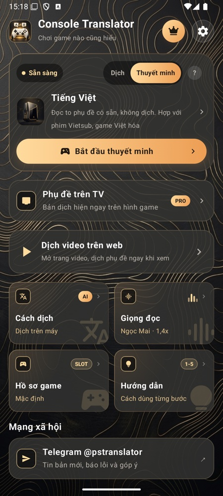
2Kết nối máy chơi game
- Bấm Bắt đầu dịch game, chọn nơi bạn chơi.
- Chơi trên TV: chơi trên TV bằng tay cầm, điện thoại chỉ hiện và đọc bản dịch. Màn Kết nối hiện tên máy, địa chỉ và Máy đang bật.
- Chơi trên điện thoại: hình game hiện trên điện thoại (xem mục 7).
- Game đang chơi: chọn hồ sơ game (mỗi game một khung đọc và phong cách dịch).
- Người chơi đã ghép nối: chọn người chơi dùng khi dịch và khi chơi trên điện thoại. Bấm Thêm để ghép người chơi khác.
- Nút Kết nối TV cạnh Dịch khi chơi TV: mở phần Phụ đề trên TV.
3Chỉnh khung đọc phụ đề
- Trên màn dịch, bấm nút khung màu vàng trên thanh công cụ. Hình game hiện ra kèm khung vàng.
- Kéo khung vàng tới dòng phụ đề tiếng Anh. Kéo chấm tròn ở góc dưới bên phải để khung ôm vừa chữ.
- Bấm Lưu khung.
4Màn dịch và thanh công cụ
Lần đầu vào, app hiện thẻ Cách dùng màn hình dịch. Bản dịch hiện ở hộp dưới cùng: dòng nhỏ phía trên là câu trước, rồi câu gốc tiếng Anh, chữ to là bản dịch. Thanh trên cùng, từ trái sang:
- Mũi tên: quay lại, dừng dịch.
- Hồ sơ: đổi game, phong cách dịch, xem lại hướng dẫn.
- Khung: chỉnh khung đọc phụ đề.
- Aa: cỡ chữ, màu, nền phụ đề trên TV và trên điện thoại.
- TV: phụ đề trên TV.
- Mặt trăng: tắt màn hình cho đỡ tốn pin, vẫn dịch và đọc. Chạm 2 lần để bật lại.
- Loa: bật, tắt giọng đọc.
- Bánh răng: Cài đặt.
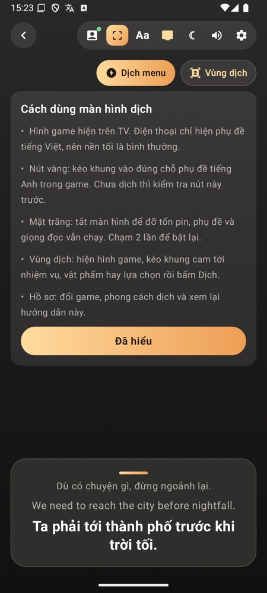
5Vùng dịch và Dịch menu
Vùng dịch: cho chữ đứng yên như nhiệm vụ, mô tả vật phẩm, thư, các lựa chọn hội thoại.
- Bấm Vùng dịch, hình game hiện ra với khung cam Dịch tạm thời.
- Kéo khung cam phủ lên chữ rồi thả tay, bản dịch hiện ngay bên dưới.
- Bấm Ẩn hình game để đóng.
Dịch menu: mở menu trong game (kỹ năng, túi đồ, hướng dẫn) rồi bấm Dịch menu. App đọc cả màn hình và chỉ dịch đoạn chữ dài. Bật Dịch tự động để khỏi bấm mỗi lần, bấm Dịch lại khi cần.
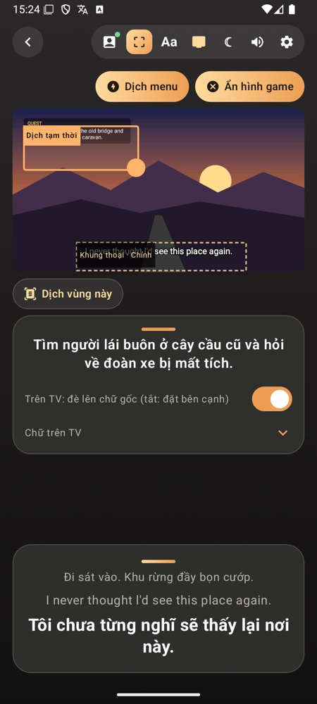
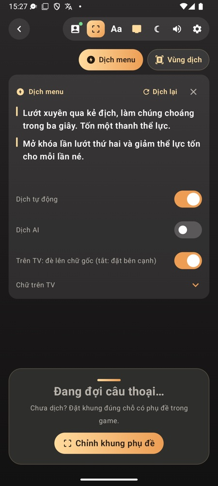
6Kiểu phụ đề (Aa)
- Tab Điện thoại: cỡ chữ, màu, nền phụ đề trên điện thoại.
- Tab TV: cỡ chữ, vị trí từ đáy màn hình, chiều rộng, màu chữ, độ đậm và màu nền, hiện câu gốc, âm lượng giọng TV.
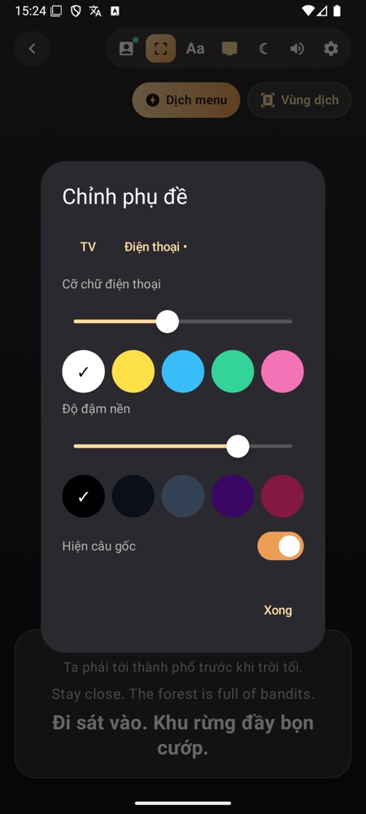
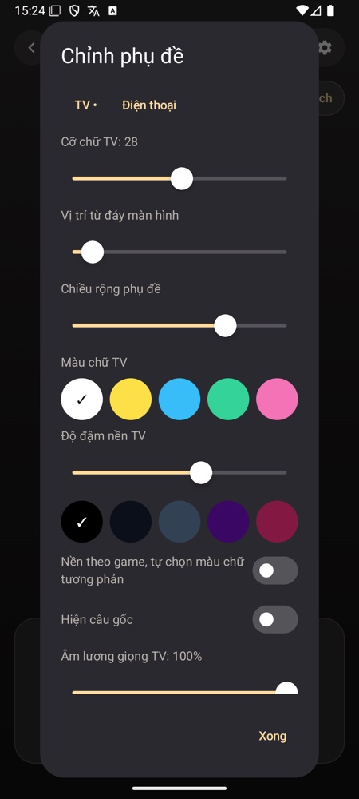
7Chơi trên điện thoại
Hình game hiện ngay trên điện thoại, bản dịch hiện đè lên hình.
- Bấm Bắt đầu dịch game → Chơi trên điện thoại → Chơi trực tiếp trong app.
- Bấm Chơi trên điện thoại, chọn chất lượng hình (Tự động là được, Wi-Fi yếu thì chọn tốc độ thấp), bấm Chơi.
- Chơi bằng tay cầm nối điện thoại hoặc nút ảo trên màn hình. Thanh trên cùng có khung đọc phụ đề, Dịch menu, loa, TV và Aa. Chơi bằng tay cầm thì thanh tự ẩn sau 4 giây, chạm vào hình để hiện lại.
Đang dùng app Remote Play khác (PXPlay, Chiaki)? Chọn Dùng app PXPlay hoặc Chiaki: bản dịch nổi lên trên app đó.
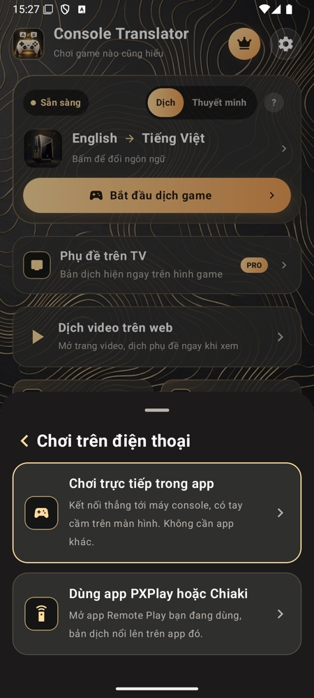
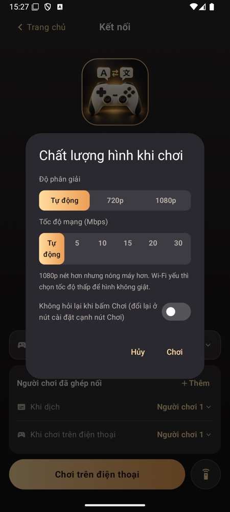
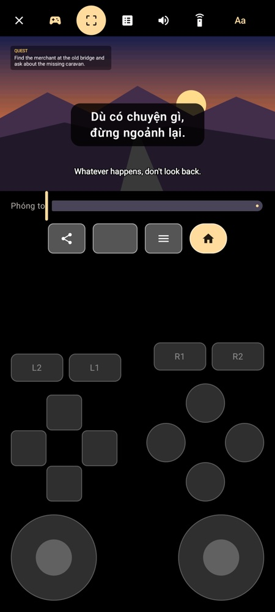
8Dịch video trên web (miễn phí)
Xem YouTube hay trang video khác ngay trong app, phụ đề tự sang tiếng Việt.
- Ở màn chính bấm Dịch video trên web, mở video và bật phụ đề.
- Bấm Dịch trên thanh trên cùng để bắt đầu.
- OCR: đọc chữ trên hình khi video không có phụ đề dạng chữ. Khung quét chọn vùng chữ.
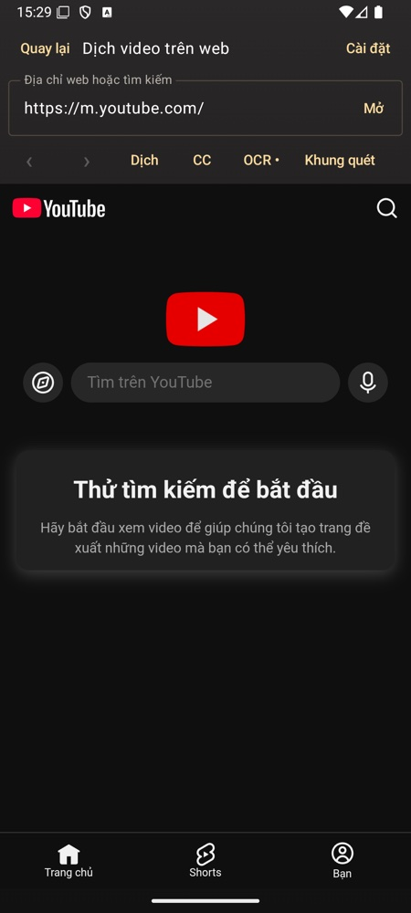
9Cài đặt: cách dịch, giọng đọc, hồ sơ
- Cách dịch: Dịch trên máy (miễn phí, tải gói khoảng 30 MB rồi dịch không cần mạng), Dịch AI (hay nhất, Premium), CloudAPI, Google Gemini (cần khóa).
- Giọng đọc: chọn giọng, tốc độ, Đọc theo cảm xúc, Nghe thử.
- Phụ đề: hiện câu gốc, cỡ chữ. Nâng cao: khi máy nóng hoặc sót câu thoại.
- Hồ sơ game: mỗi game một hồ sơ (khung đọc, phong cách dịch riêng). Gõ tên game đang chơi để Dịch AI dịch đúng tên riêng (cần Premium; bản dịch thường không dịch theo game).
- Ngôn ngữ: ngôn ngữ app, ngôn ngữ trong game, dịch sang, tải gói đọc chữ và dịch ngoại tuyến.
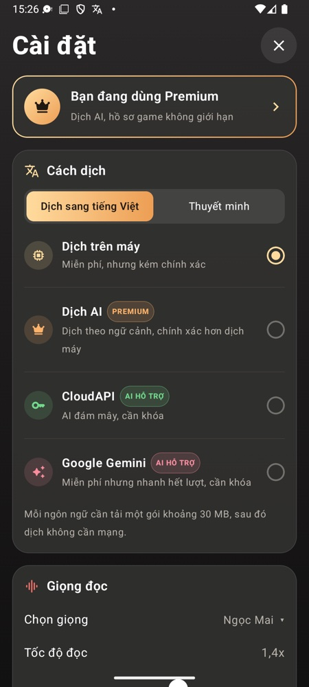
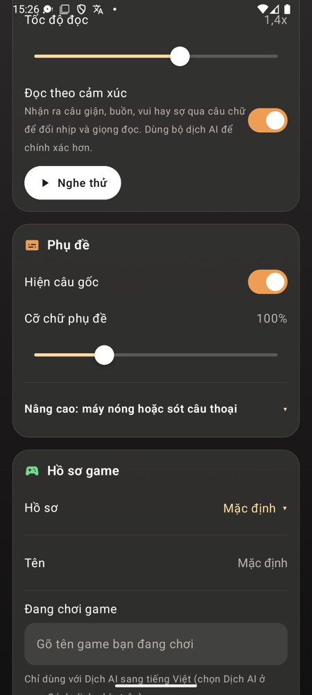
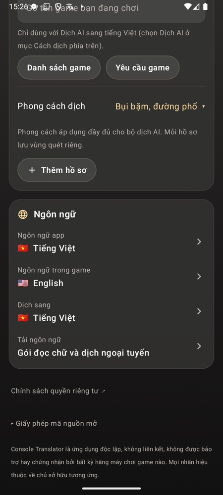
10Gói Premium và PRO
- Premium (theo tuần, tháng, năm): Dịch AI (1.000 câu mỗi ngày), đọc theo cảm xúc, hồ sơ game không giới hạn.
- PRO mua 1 lần: Phụ đề trên TV, giọng đọc qua loa TV, Vùng dịch hiện trên TV, giọng AI, hồ sơ game không giới hạn. Không gồm Dịch AI.
- Bấm vương miện ở màn chính để xem và mua. Đổi máy hay cài lại thì gói theo tài khoản Google Play của bạn.
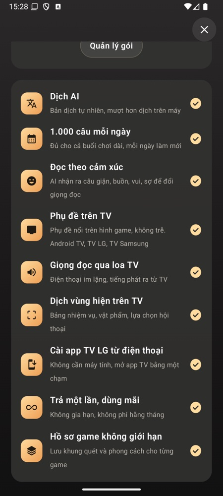
TVPhụ đề ngay trên màn hình TV
Máy chơi game vẫn cắm HDMI thẳng vào TV. Chỉ phụ đề và giọng đọc đi từ điện thoại sang TV qua Wi-Fi nên hình ảnh không bị giảm chất lượng hay thêm độ trễ.
- Android TV / Google TV: được, cần Android 9 trở lên. TV nào khóa quyền Hiển thị trên ứng dụng khác thì không hiện được phụ đề.
- TV LG webOS: thử nghiệm, cần Developer Mode. Đã chạy trên webOS 7 (TV 2022), đời khác chưa kiểm tra hết.
- TV Samsung từ 2017 (Tizen 3.0 trở lên): thử nghiệm, cần Developer Mode, máy tính và tài khoản Samsung.
- TV Samsung 2016 trở về trước, TV hệ điều hành khác, Android Box: không hỗ trợ.
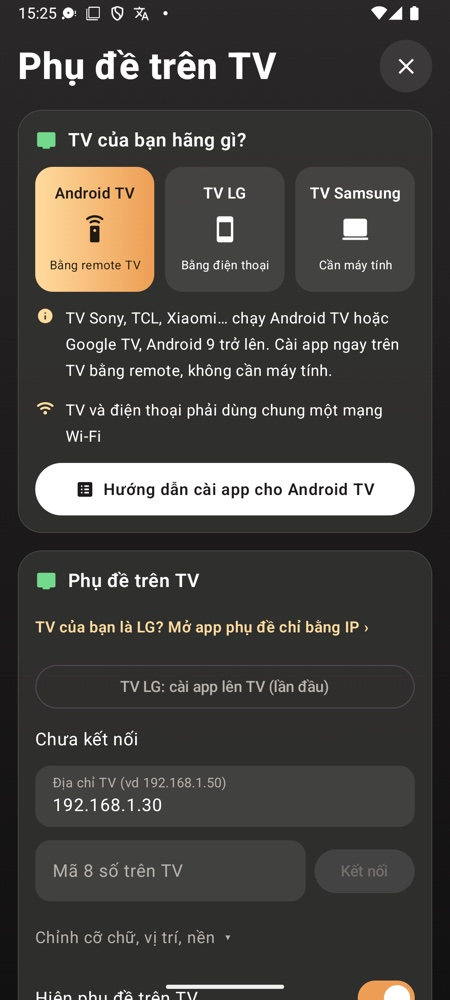
Android TVCài bằng remote
Mã Downloader dùng để tải app trên TV, khác với mã ghép phụ đề 8 số. App TV tự hiện nút Cập nhật khi có bản mới.
Cài app
- Trên TV, cài Downloader by AFTVnews từ Google Play.
- Vào Cài đặt → Ứng dụng → Quyền truy cập đặc biệt → Cài đặt ứng dụng không rõ nguồn, cho phép Downloader.
- Mở Downloader, nhập mã đúng loại TV ở trên, tải rồi cài file APK.
Cấp quyền và mở app
- Mở Console Translator TV, bấm Cấp quyền hiển thị trên ứng dụng khác.
- Bật quyền cho app rồi bấm Back. Nếu được hỏi, cho phép app bỏ qua tối ưu hóa pin.
- App hiện mã 8 số và địa chỉ TV. Làm tiếp phần Ghép nối TV với điện thoại ở dưới.
android.permission.SYSTEM_ALERT_WINDOW → Allow.TV LG (webOS)Cài bằng điện thoại
Cài app lên TV một lần ngay bằng điện thoại (cần PRO). Sau đó mỗi lần chơi, điện thoại tự mở app trên TV.
1. Chuẩn bị TV, làm lần đầu
- Tạo tài khoản LG Developer (miễn phí). Trên TV, cài Developer Mode từ LG Content Store và đăng nhập.
- Bật Dev Mode Status, chờ TV khởi động lại. Mở Developer Mode, bật Key Server.
- Ghi lại IP và Passphrase 6 ký tự đang hiện trên TV. Điện thoại và TV dùng chung Wi-Fi.
2. Cài bằng điện thoại
- Trong app: Phụ đề trên TV → TV LG: cài app lên TV (lần đầu).
- Nhập IP và Passphrase đang hiện trên TV, bấm Cài lên TV.
- Lần đầu, app hiện mã nhận dạng TV: đúng TV nhà bạn thì bấm xác nhận.
- Thấy báo đã cài xong là app phụ đề đã mở trên TV.
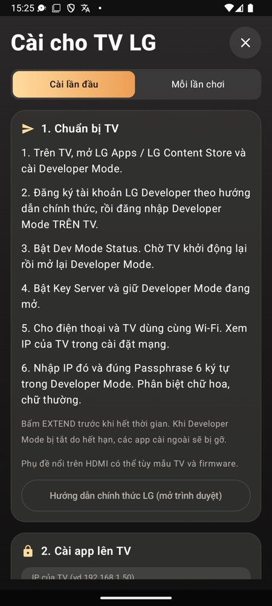
3. Mỗi lần chơi
- Bật máy chơi game, chuyển TV sang đúng cổng HDMI, chờ TV hiện hình game.
- Trong app: Phụ đề trên TV → TV của bạn là LG? Mở app phụ đề chỉ bằng IP, nhập IP của TV. Lần đầu TV hỏi cho phép điện thoại điều khiển: chọn Đồng ý bằng remote.
TV Samsung (Tizen)Windows / Mac
TV Samsung từ 2017 trở lên. Bản APK beta cài thẳng từ điện thoại: Phụ đề trên TV → TV Samsung: cài app lên TV, ô Host PC IP trên TV nhập IP của điện thoại (app hiện sẵn). Bản Google Play cài một lần bằng máy tính Windows hoặc Mac, máy tính và TV cùng Wi-Fi. Làm theo hướng dẫn cài TV Samsung. Cài xong, mở Console Translator TV trên TV và ghép điện thoại bằng mã 8 số. Từ lần sau không cần máy tính.
Ghép nối TV với điện thoạiDùng cho mọi loại TV
Bước 1: Mở app trên TV
Bật máy chơi game trên TV, rồi mở app Console Translator TV. Màn hình TV hiện Địa chỉ TV và Mã ghép nối (8 số):
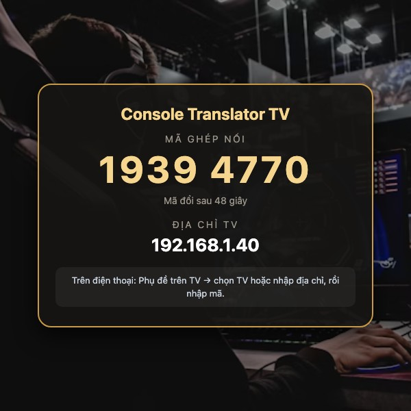
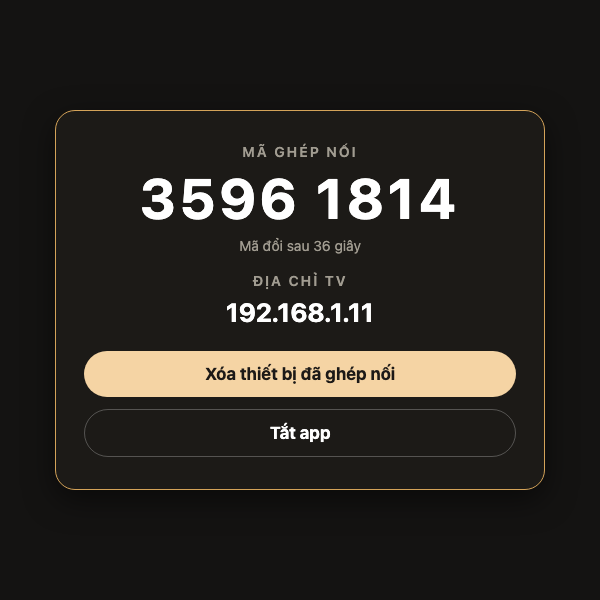
Bước 2: Mở Phụ đề trên TV trong app
Ở màn chính bấm ô Phụ đề trên TV, hoặc trên màn dịch bấm nút TV trên thanh công cụ.
Bước 3: Nhập địa chỉ TV và mã 8 số, bấm Kết nối
Chọn TV trong danh sách (hoặc gõ Địa chỉ TV đang hiện trên TV), nhập mã 8 số, bấm Kết nối. Thấy Đã kết nối là xong. Bấm Gửi lên TV để thử một câu.
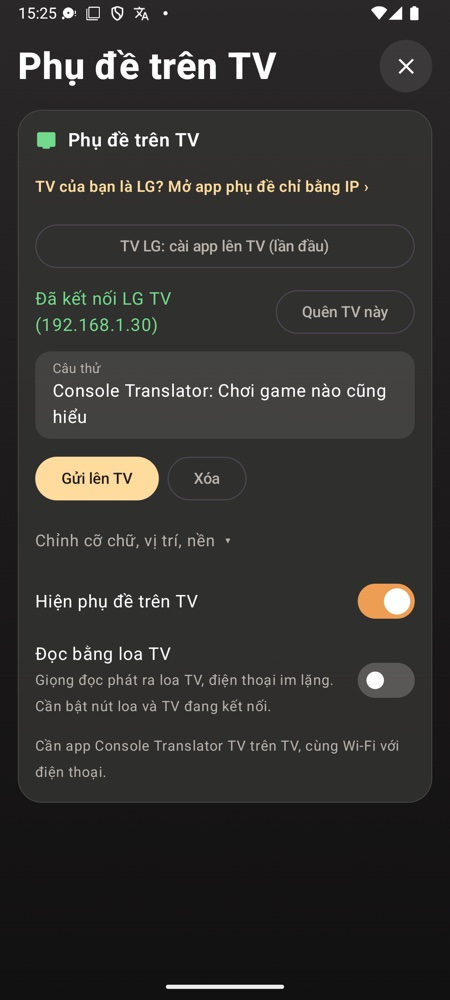
Chuyển TV sang cổng HDMI của máy chơi game, phụ đề tiếng Việt sẽ tự nổi trên màn hình TV. Bật Đọc bằng loa TV nếu muốn giọng đọc phát ra loa TV.
Kết quả trên TV
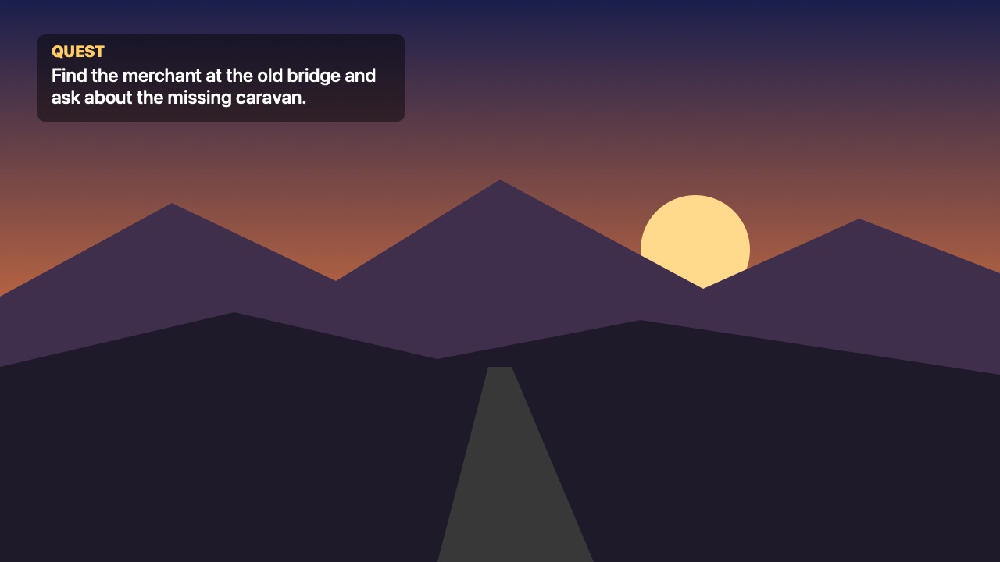

Mã ghép nối đổi mỗi phút nhưng chỉ cần nhập một lần đầu. Cỡ chữ, màu, nền, vị trí đều chỉnh trên điện thoại (nút Aa).
Lỗi thường gặp trên TV
- Không kết nối được TV: mở app trên TV trước, kiểm tra TV và điện thoại cùng Wi-Fi, rồi nhập đúng địa chỉ đang hiện trên TV.
- Sai mã: nhập mã 8 số mới nhất đang hiện trên TV.
- LG không cài được: kiểm tra Developer Mode còn hạn, Key Server đang bật, IP và Passphrase đúng.
- Phụ đề biến mất: Android TV cần bỏ tối ưu hóa pin; LG cần mở lại app trên TV từ điện thoại nếu đã bấm Home.
Gặp lỗi? Bấm vào lỗi giống bạn
Không tìm thấy máy
- Điện thoại và PS5 cùng một mạng Wi-Fi. Tắt VPN, không dùng Wi-Fi dành cho khách.
- Vẫn không thấy thì nhập IP bằng tay: trên PS5 vào Cài đặt → Mạng → Trạng thái kết nối → Xem trạng thái kết nối, xem dòng IPv4 Address (dạng 192.168.x.x), rồi bấm Không tìm thấy? Nhập địa chỉ bằng tay trong app.
App báo chưa đúng mã ở bước lấy mã người chơi
- Chỉ copy dòng BASE64 (FOR REMOTE PLAY), dãy kết thúc bằng dấu
=. Không lấy dòng HEX hay NPID. - Copy đủ cả dãy, không thừa khoảng trắng. Xem lại bước 7 tab Điện thoại.
Ghép nối thất bại (PS5 từ chối mã 8 số)
- Trên PS5 vào Bật Chơi từ xa, kiểm tra đã bật đúng tài khoản phụ mà app dùng.
- Mã người chơi (bước 7) phải là của tài khoản đang chọn trên PS5.
- Mã 8 số hết hạn rất nhanh: bấm Ghép nối thiết bị lấy mã mới rồi nhập ngay.
Ghép nối xong nhưng không vào được game
- Tắt Chơi từ xa đang mở ở thiết bị khác (PC, điện thoại khác).
- Đợi khoảng 30 giây rồi thử lại. App tự nối lại tối đa 4 lần khi rớt mạng.
- Vẫn lỗi thì xóa ghép nối cũ trên PS5 và ghép nối lại từ đầu.
Tay cầm bị ngắt khi app kết nối
Đây là bình thường, không phải lỗi. Bấm nút Home giữa tay cầm, chọn lại người chơi của bạn. Để không bị nữa, dùng tài khoản phụ như bước 3 tab Điện thoại.
Có hình nhưng không ra bản dịch
- Game phải bật phụ đề tiếng Anh.
- Khung vàng phải trùm đúng dòng phụ đề: bấm nút khung trên thanh công cụ, kéo lại cho khớp.
- Dịch trên máy cần tải gói ngôn ngữ lần đầu: Cài đặt → Ngôn ngữ → Tải ngôn ngữ, cần Wi-Fi.
- Dùng Gemini hoặc CloudAPI: kiểm tra mạng và khóa API.
Có bản dịch nhưng không nghe đọc
Bật nút loa trên thanh công cụ màn dịch, tăng âm lượng điện thoại, kiểm tra có đang nối tai nghe Bluetooth không. Đổi giọng trong Cài đặt → Giọng đọc, bấm Nghe thử.
Máy nóng, hình giật hoặc hay rớt mạng
- Cắm dây mạng (LAN) cho PS5 nếu được. Điện thoại dùng Wi-Fi 5 GHz, để gần router.
- Máy nóng: Cài đặt → Nâng cao: máy nóng hoặc sót câu thoại. Bật mặt trăng trên màn dịch để tắt màn hình.
- Chơi trên điện thoại: chọn 720p và tốc độ mạng thấp hơn trong Chất lượng hình.
Không tìm thấy hoặc không kết nối được TV
- Mở app nhận phụ đề trên TV, kiểm tra TV đang hiện mã 8 số.
- Điện thoại và TV cùng mạng Wi-Fi.
- Không thấy TV trong danh sách thì gõ địa chỉ đang hiện trên TV. Mã đổi mỗi phút, dùng mã mới nhất.
- TV chưa có app thì xem tab Phụ đề TV.
Dịch cả chữ menu, bảng điểm, HUD
Thu nhỏ khung vàng cho vừa dòng phụ đề. Chữ menu thì dùng Dịch menu, chữ nhiệm vụ thì dùng Vùng dịch (xem tab Cách dùng).